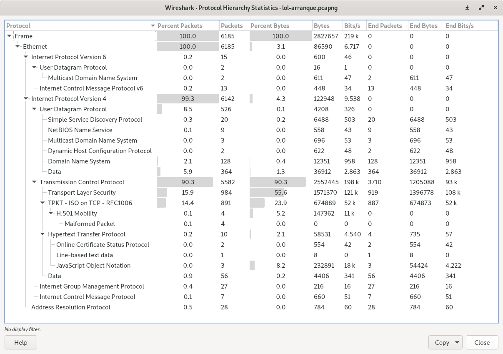
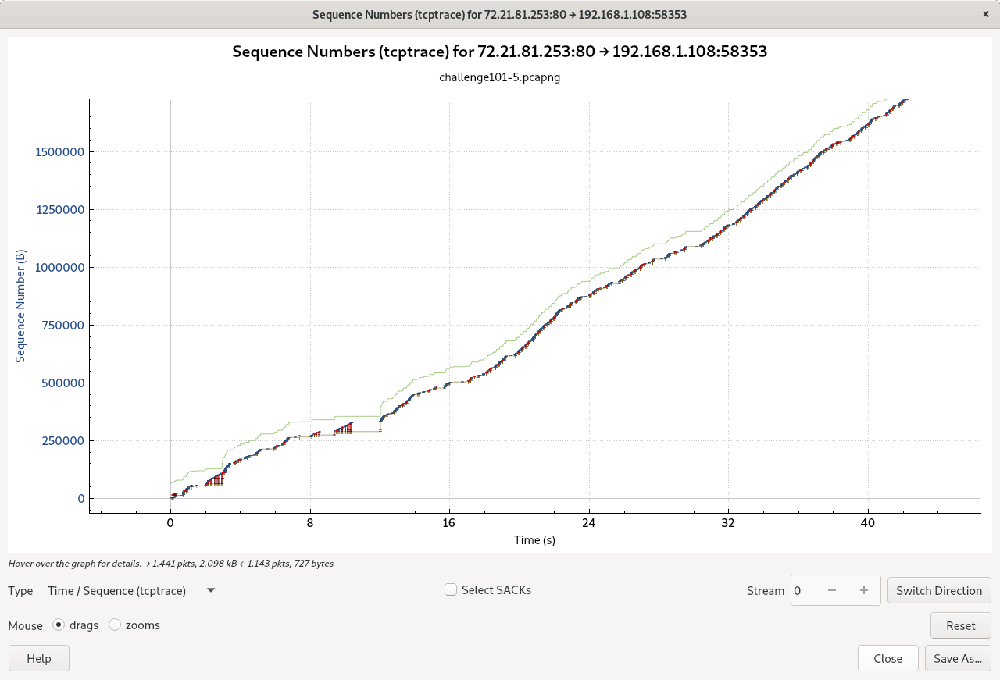
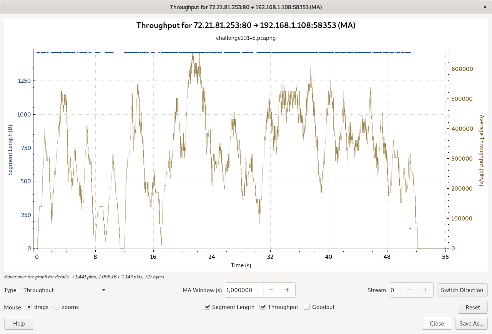

Estadísticas en Wireshark¶
Introducción¶
Uno de los puntos fuertes de Wireshark, es la herramienta de estadísticas.
Wireshark, nos proporciona una amplia gama de estadísticas de red, a las que se puede acceder a través del menú Statistics. Estas, nos proporcionan datos obre la red, quien habla con quien, el tamaño de los paquetes, en definitiva, información sobre el comportamiento de la red.
Nos encontramos con estadísticas específicas de un protocolo y estadísticas generales:
Capture file properties, propiedades sobre el archivo de captura.
Protocol Hierarchy, jerarquía de protocolos de los paquetes capturados
Conversations, tráfico entre direcciones IP
Endpoints, tráfico hacia y desde una dirección IP
I/O Graphs, gráfica sobre el número de paquetes en el tiempo
Nota
Las estadísticas específicas del protocolo requieren un conocimiento detallado sobre el protocolo específico, a menos que esté familiarizado con ese protocolo, pueden ser difíciles de entender.
Capture file properties¶
Nos proporciona datos relativos al archivo de captura:
Nombre del archivo, formato, hash, tamaño
Fecha y hora de captura del primer y último paquete
Sistema operativo de la máquina dónde se realizó la captura
Estadísticas de paquetes capturados

Protocol Hierarchy¶
Si queremos conocer el tipo de tráfico que corre a través de la red, se presenta como un árbol con todos los protocolos de la captura.
Cada fila, contiene los valores estadísticos de un protocolo. Si se configura un filtro de visualización, se mostrará en la parte inferior y sólo apareceran los protocolos que coincidan con la regla de filtrado
Nos presenta datos estdísticos de los protocolos en el archivo capturado
Nombre de protocolo
Percent Packets, porcentaje de paquetes que se corresponden con el protocolo
Packets, número de paquetes de ese protocolo
Percent Bytes, porcentaje del número de bytes del protocolo capturado
Bytes, número de bytes en el protocolo capturado
Bits/s, especifica el ancho de banda de ese protocolo en relación con el tiempo de captura
Nota
Con el fin de garantizar que Wireshark también contará los paquetes de datos dentro del protocolo TCP, desactive la opción Allow subdissector TCP stream y vuelva a ensamblar los flujos TCP
Los paquetes, generalmente tiene varios protocolos, como resultado, se contará más de un protocolo para cada paquete
El porcentaje de la columna Packets y Bytes, muestran el total de la captura
Cuando expandimos una sección, los paquetes que dependen de él, son la suma del total de la sección
Wireshark, no asocia el tráfico TCP como aplicación y habrá muchos paquetes que no formen parte de una aplicación (datos de aplicaciones HTTP, FTP, conexión, retransmisiones, etc.). Sin embargo, si sumamos los valores de UDP, estos deben ser muy parecidos o muy cercanos al valor global de UDP.
Esta ventana, sirve de ayuda cuando se sospecha que un host puede estar comprometido, se pueden identificar aplicaciones de red inusuales (IRC, RPC, etc.), cuando se vea tráfico sospechoso, se puede filtrar y examinar para determinar si es malicioso.
Con el botón derecho del ratón, podemos aplicar un filtro o construir una regla de coloreado para ese protocolo o aplicación.
Conversations¶
Una conversación de red es el tráfico entre dos puntos finales específicos. Por ejemplo, una conversación IP es todo el tráfico entre dos direcciones IP (dos equipos finales). Por lo tanto, podemos saber que hosts se comunican en la red
Nota
Podemos elegir entre conversaciones Ethernet, IPv4, IPv6, TCP y UDP
Se presenta una ventana con todas las conversaciones capturadas, clasificadas por protocolos.
Junto con las direcciones, los contadores de paquetes y de bytes, se agregan dos columnaa (Rel Start y Duration), que indican el tiempo de inicio de la conversación y la duración.
Se pueden limitar las conversaciones con un filtro de visualización, para ello aplicamos un filtro de visualización y marcamos la casilla Limit to display filter, así, las estadísticas se presentarán los paquetes que cumplan la regla de filtrado
Desde el campo de selección Display Types, podemos selecionar que protocolos se van a visualizar en la ventana conversations.
La resolución de nombre se realizará si se selecciona en la ventana y si está activa para la capa de protocolo específica.
Podemos cambiar la columna de tiempo de inicio entre tiempos relativos o tiempos absolutos. Las horas de inicio relativas coinciden con el formato de visualización de la hora «Segundos desde el comienzo de la captura» en la lista de paquetes y las horas de inicio absolutas coinciden con el formato de visualización de «Hora del día».
Desde la pestaña de TCP, si seleccionamos una conversación, se activará el botón Follow Stream, que extrae el flujo de datos establecido en una sesión TCP. También podemos aplicar un filtro, seleccionando con el botón derecho Apply as filter, en este caso, podemos seleccionar la dirección en la que estamos interesados para filtrar.
Haciendo click en el titulo de cada columna, se pueden ordenar las conversaciones de mayor a menor o viceversa, lo que nos permitirá, buscar patrones de exploración y aplicar un filtro o construir una regla de coloreado para esa conversación
Nota
Esta ventana se actualiza con frecuencia, por lo que será útil, tenerla abierta mientras se está haciendo una captura en vivo.
Endpoint¶
Muestra el tráfico de los elementos finales, ofreciendo estadísticas de ese host concreto, para el protocolo Ethernet, IPv4, IPv6, TCP y UDP
Podemos utilizar esta ventana para ver la actividad de una máquina en particular. Si vemos pocos endpoints IP con muchos nodos finales TCP, caso de muchas conexiones TCP por host, podría ser una operación regular de un servidor con muchas conexiones, un tipo de ataque DoS, o un simple escaneo de puertos
Estadísticas IP¶
Nos ofrece varias estadísticas sobre el tráfico IP
All addresses, se visualizarán todas las estadísticas de paquetes
Destination and ports, mostrará todas las direcciones IP destino al cual son enviados los paquetes y sobre qué protocolos, con esta herramienta, si vemos una dirección y un puerto extraño con demasiados paquetes enviados, nos puede dar lugar a sospecha
IP protocol types
Source and destination addresses
Todas los resultados estadísticos, se puede exportar a varios formatos de archivo
Texto plano
Archivos csv
Archivos YAML
Flow graph¶
Nos ofrece una ventana con el flujo TCP en modo gráfico

Podemos seleccionar entre ver todos los flujos, o sólo los flujos TCP
También, podemos ver los flujos que tengamos seleccionados con un filtro de visualización haciendo click en Limit display filter
Podemos exportar la ventana como archivo pdf o como un archivo gráfico (png, lpeg, etc.)
IO Graph¶
Un gráfico, nos permite analizar el flujo de una aplicación o host y compararlo con ciertos eventos o comportamientos
Por defecto, saca una gráfica que analiza el tráfico total de la captura con los eventos de análisis TCP (errores TCP) que ha confeccionado wireshark
Nota
Wireshark, comprende muchos tipos de errores, cuando se ven paquetes que indican problemas de red, se etquetan con tcp.analisys.flags. Un Windows update, es bueno, pero se etiqueta como tcp.analisys.flags. Si buscamos problemas de TCP, deberemos excluir esos paquetes
tcp.analisys.flags && !tcp.analisys.window_update
El eje X, corresponde al tiempo (podemos seleccionar varios intervalos de tiempo), el eje Y, puede contener.
Paquetes
Bytes
Bits
Operaciones estadísticas:
Suma (SUM)
Conteos (COUNT FRAME y COUNT FIELD)
Valores máximo (MAX)
Valores mínimos (MIN)
Medias (AVG)
Tiempos de respuesta (LOAD)
Podemos elegir varios tipos de gráficos:
Barras
Línea
Puntos
Cuadrados
Impulsos
Podemos añadir otro gráfico para comparar pulsando el botón [+] y elegir en Display Filter, los paquetes que queremos utilizar en el estudio.
Si el archivo de rastreo tiene varias conversaciones IP, debemos usar un filtro para representar la conversación deseada
Cuando se hace un gráfico de aplicaciones basadas en TCP, asegurese de aplicar el filtro en el puerto, en lugar de en el nombre de la aplicación, nos aseguramos de capturar la conexión y los problemas que se encuentren
Con Time of Day, ajustamos el tiempo en valor absoluto
Con Log scale, vemos el gráfico como una escala logaritmica

TCP Stream Graph¶
Una de las herramientas que nos permite profucizar en el comportamiento de las aplicaciones, es el gráfico de flujo TCP TCP Stream Graph (Time Secuence Graph)
Nota
Es recomendable grabar una captura y luego usar esa herramienta
En todos los tipos de gráfico, nos aparece la dirección de la conversación, IP origen -> IP destino y un botón Switch Directión para ver el sentido contrario de la conversación.
TCP Stream Graph Steven¶
Es un gráfico que muestra el número de secuencia TCP a lo largo del tiempo, es decir, vemos el avance de la transferencia de bytes en el tiempo. Esta gráfica, nos puede dar una buena indicación del comportamiento de la aplicación, si vemos una señal diagonal contínua, es señal de buena transferencia, si vemos una diagonal con interrupciones, muestra un problema en la transferencia. Una pendiente elevada, indica una alta transferencia de datos y al contrario, a menor pendiente, menor tasa de transferfencia
Al hacer click derecho en un punto del gráfico, nos llevará hasta el panel de paquetes en el paquete capturado

TCP Stream Graph TCPTrace¶
Estos gráficos, además del estándar número secuencia/segundo, también reciben información sobre los ACKs que se enviaron, retransmisiones, tamaño de ventana y más detalles que nos permiten analizar los problemas de la conexión.
El tráfico inferior, muestra el avance en la transferencia de datos respecto al tiempo y el gráfico superior, muestra el tamaño de la ventana. Cuando hay espacio entre los dos, significa que hay un flujo correcto, si estan cerca o llegan a tocarse, sería un problema de tamaño de ventana, que hace que el equipo receptor no permita la transferencia de datos.
TCP Stream Graph Throughput¶
Nos permite ver el rendimiento de una conexión y verificar su inestabilidad
Podemos elegir ver la relación del tamaño del paquete con respecto al rendimiento
TCP Stream Graph Round Trip Time¶
El gráfico representa los números de secuencia TCP frente al tiempo que llevó reconocerlos (en realidad, es el tiempo entre un paquete enviado y el ACK recibido para ese paquete).

Podemos ver la relación de RTT con respecto a los números de secuencia
TCP Stream Graph Window Scaling¶
Nos permite ver el tamaño de la ventana publicada por el lado receptor, que es una indicación de la capacidad del receptor para procesar datos.
Cuando el tamaño de la ventana disminuye, el rendimiento de las aplicaciones debe disminuir también (el tamaño de la ventana, está completamente controlado por los dos extremos de la conexión)